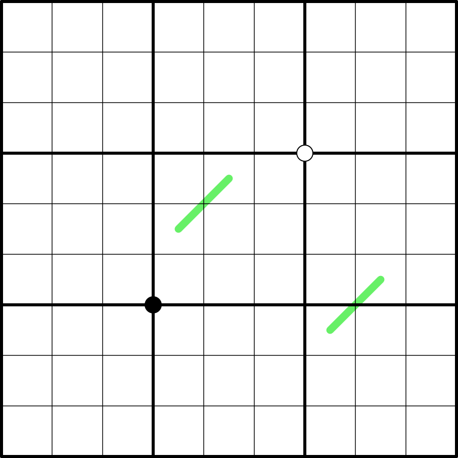

Entropie - ⭐️⭐️

LINK
REGELS:
- Standaard sudoku: Plaats de cijfers van 1 t/m 9 eenmaal in elke rij, kolom, en 3x3 blok.
- Custom: Vakjes met dezelfde posities binnen hun 3x3 blokken zijn allemaal laag (1,2,3), gemiddeld (4,5,6) of hoog (7,8,9).
- German whisper line: Cijfers die naast elkaar op een groene lijn liggen hebben een verschil van minimaal 5.
- Custom: Vakjes die diagonaal zijn gescheiden door een zwarte stip bevatten cijfers met een 1:2 ratio.
- Custom: Vakjes die diagonaal zijn gescheiden door een witte stip bevatten opeenvolgende cijfers.